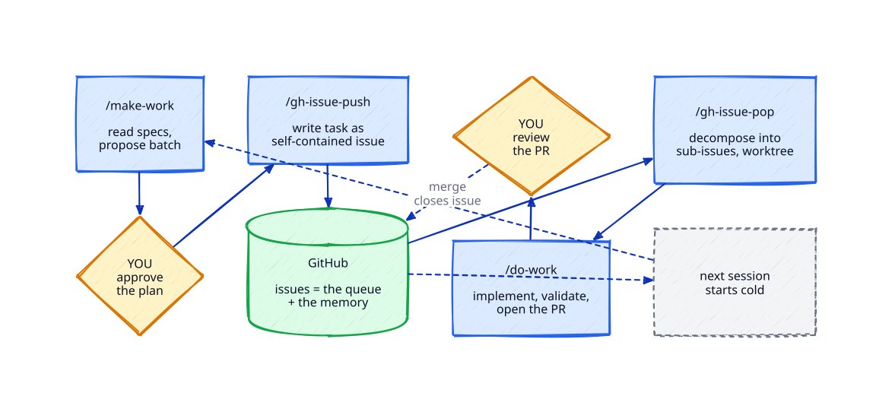
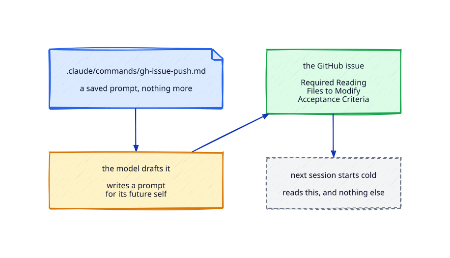
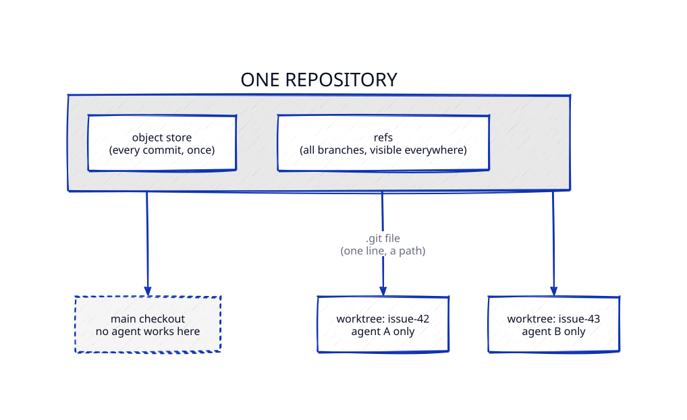

The Human Is the Loop
Planning and shipping code with Claude Code and GitHub
Petar Djukic · Ottawa ML/AI Meetup · August 11, 2026
Everyone says "loop engineering": replace yourself as the person who prompts the agent. I am responsible for what ships, so I stay in control. This talk shows the four skills that make that possible, live, on a real repository — four commands, GitHub, markdown files, no framework. Every skill has a write-up on Mesh Intelligence.
The loop

The whole talk in one picture. Every box is a command; every gate is the human. The commands themselves are markdown files, published in petar-djukic/coding-skills.
Skill 1 — Getting the model to write its own prompts

- The commands are saved prompts — markdown files in
.claude/commands/. - Every issue in my repositories was drafted by a model.
- Live:
/make-workproposes the batch; I approve;/gh-issue-pushfiles it. Nothing exists until the plan is approved.
Write-up: How to Loop Engineering
Skill 2 — Long-term memory management

- The executing session reads the issue body and the repository, and nothing else. Nothing from the planning conversation survives, and nothing needs to.
- The shape is forty years old: a blackboard — agents are the specialists, GitHub is the board, the control component is you.
- Live:
/do-work— implement, validate, PR opens. The agent never merges its own PR.
Write-up: How to Use GitHub as Long-Term Memory for Coding Agents
Skill 3 — Giving every task its own workspace

- A worktree is born when the task starts and dies when the PR merges.
- Disposable workspaces mean parallel agents, safe breakage, and your checkout stays yours.
- Live: the same issue handed to a second tool mid-task. The tool is disposable; the loop is not.
Write-up: How to Use Git Worktrees with Coding Agents
Skill 4 — Giving the agent temporal agency

- A work order that outlives its completion: closing the issue creates the next instance.
- Nobody remembers to do the chore; the issue remembers for you. The upgrade issue has tracked this repo's tooling since March, eight runs in its log.
Write-up: How to Use GitHub to Give a Coding Agent Recurring Work
Run the demo yourself
The demo repository is public: petar-djukic/sdd-hello-world — a minimal spec-driven project with the full issue history, including the recurring reset issue that rewinds the demo. The write-up walks the whole session end to end and hands the same issue to GLM 5.2 on OpenCode: Spec-Driven Development with GitHub, Claude, and GLM on OpenCode.
Take it home. The model does the work. You do the thinking. The commands are markdown files — copy them into your own repository. The write-ups, in demo order:
- How to Loop Engineering
- How to Use GitHub as Long-Term Memory for Coding Agents
- How to Use Git Worktrees with Coding Agents
- How to Use GitHub to Give a Coding Agent Recurring Work
- How to Build a Writing Pipeline
- How to Stay on Track with Opus 5
New to the publication? Start Here maps the three tracks.